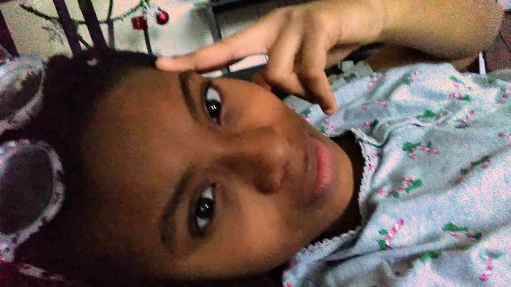

The Precious Life of Keala
An Outline of Me
This is a page of all things Keala. From my favorite foods, to my daily activities, down to even the color. It's basically just a couple of my favorite things in lists. So... here goes! Blah, blah, blah, blah, blah, blah, blah, blah. sorry y'all I needed more content. Lol, if you haven't noticed I say lol a lot. I even text it alot. It's a pretty cool abbreviation. Like you can literally say it in any scenario. I'll be straight faced about something someone says and I'll just say lol. Or you can say it to someone if you weren't really listening and people just laugh while you secretly hope they didn't say anything worthwhile. Dang, I just low key went on a typing rant about the abbreviation lol. It's amazing though so say it more. But like not at funerals.
- Favorite Foods
- burgers
- tacos
- pizza
- cheese

- Other Background
- My birthday is June 16th
- I'm a senior at King
- My favorite color is green
- I'm really weird guys
